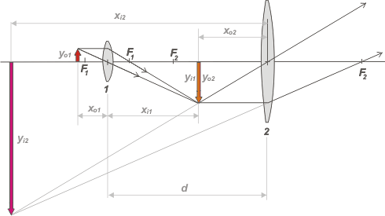

|
NO ME SALEN
EJERCICIOS RESUELTOS DE FÍSICA Y BIOFÍSICA
Ondas, óptica geométrica, microscopio
|
|

|
NMS Ad 3.1 - En un microscopio, el objetivo y el ocular (lentes convergentes) tienen distancias focales de 0,8 cm y 2,5 cm respectivamente. Sabiendo que la imagen real formada por el objetivo está a 16 cm de éste y que la imagen final, virtual, se forma a 25 cm de distancia del ocular, hallar el aumento lateral del instrumento y determinar la distancia entre objetivo y ocular.
|
|
Los microscopios ópticos funcionan todos de la misma manera: el objeto se coloca delante (en general debajo) del objetivo, un lente de mucha potencia, es decir de distancia focal muy corta, y el ojo se coloca sobre el ocular, de distancia focal larga. Ya te habrás dado cuenta que esos dos lentes reciben el nombre por la función que cumplen. Mirá el esquema.
|
|
|
|  |
|
Referencias:
1: objetivo
2: ocular
F1: dist. focal objetivo
F2: dist. focal ocular
x01: posición objeto
xi1: posición imagen prim.
x02: posición imagen resp/2
xi2: posición imagen sec.
y01: tamaño objeto
yi1: tamaño imagen prim.
y02: tamaño imagen resp/2
yi2: tamaño imagen final. |
De modo que todo consiste en resolver dos ejercicios de lente simple encadenados entre sí:la imagen que produce la primera lente (el objetivo) se convierte en objeto para la segunda (el ocular). Cuando terminemos de resolverlo te cuento los "secretos" del microscopio.
Los datos para la primera parte del ejercicio son éstos: xi1= 16 cm y f1 = 0,8 cm. Y lo que podemos averiguar, por ahora, es la posición del objeto, x01. La ecuación de descartes afirma que:
xo1 = f1 . xi1 / (xi1 – f1 )
xo1 = 0,8 cm . 16 cm / (16 cm – 0,8 cm)
xo1 = 0,84 cm
Con esta información podemos calcular el aumento que produce el objetivo:
A1 = – xi1 / xo1 = –16 cm / 0,84 cm = – 19,05
El signo menos indica que esa imagen es invertida y real.
Ahora pasemos al ocular. Los datos que tenemos son: xi2= – 25 cm y f2 = 2,5 cm. El signo menos de la distancia de la imagen final hasta el ocular obedece a que se forma delante del ocular y se trata de una imagen virtual. Y lo que podemos obtener usando la ecuación de Descartes:
xo2 = f2 . xi2 / (xi2 – f1 )
xo2 = 2,5 cm . (–25 cm ) / (– 25 cm – 2,5 cm)
xo2 = 2,27 cm
Y su aumento:
A2 = – xi2 / xo2 = – (–25 cm ) / 2,27 cm = 11,01
Lo que significa que el ocular no invierte la imagen; pero como su objeto es la imagen que producía el objetivo (que era invertida), el resultado es que la observación con microscopio invierte las imágenes.
El aumento lateral del instumento, M, es igual al producto de los aumentos de cada lente, de modo que:
M = A1 . A2
M = – 19,05 . 11,01
|
|
|
|
|
|
Te dejo a vos la demostración de que el aumento total es igual al produccto de los aumentos de cada lente. Es sencillo, basta con que tengas en cuenta que el aumento total es el cociente entre el tamaño de la imagen final, yi2, y el tamaño del objeto, y01. También tenés que tener en cuenta que el tamaño de la primera imagen es lo mismo que el tamaño del segundo objeto (son el mismo ente físico), yi1 = y02. Te repito el mismo esquema de arriba para que fijes la idea: |
|
|
|
|
|
Para responder la segunda cuestión, o sea, la distancia entre las lentes, d, basta con observar atentamente el esquema. Ahí se ve claramente que:
d = xi1 + xo2
d = 16 cm + 2,27 cm
|
|
|
|
|
|
Secretos del microscopio: el primero ya te adelanté que el objetivo debe ser un lente muy potente de distancia focal muy corta (por eso siempre son muy pequeños, como una lenteja gorda). Lo más importante es que el objeto se coloca muy cerca de la distancia focal (mirá el ejemplo del ejercicio: 0,80 y 0,84). Eso garantiza un gran aumento. En general los microscopios vienen con tres objetivos intercambiables.
El segundo secreto es que el ocular sólo actúa de lupa, es decir que la imagen que produce el objetivo debe caer entre el ocular y su distancia focal (más cerca del foco que del vidrio). Los oculares suelen ser intercambiables en el instrumento, y vienen con sus aumentos impresos (10X, 25X, 40X, etcétera).
El tercer secreto es que la imagen final, xi2, siempre ronda los 25 cm que es la distancia óptima de la visión humana, de modo que el ojo tenga muy poco trabajo de enfoque, que se logra acercando o alejando levemente el objeto.
El cuarto secreto es que la distancia entre los lentes es fija, o sea, el trabajo que menciono en el párrafo anterior se logra acercando o alejando el conjunto -rígido- de los dos lentes acoplados.
Los microscopios tiene muchos más secretos, que vos podés seguir investigando. |
|
 |
| |
| Carl-Zeiss antiguo. |
| Desafío: ¿de qué tamaño se vería una célula animal con este microscopio? |
|
 |
| Algunos derechos reservados.
Se permite su reproducción citando la fuente. Última actualización jul-12. Buenos Aires, Argentina. |
|
|
| |
|
|
|